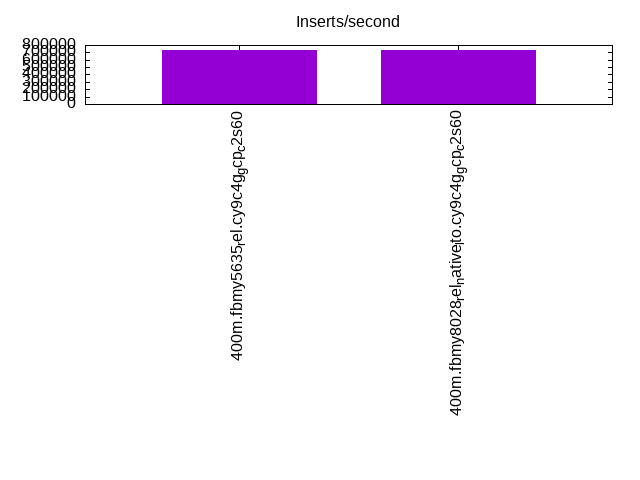
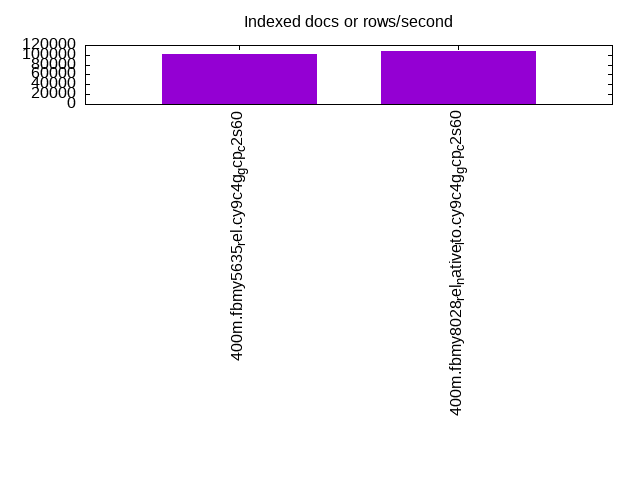
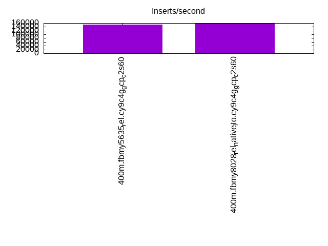
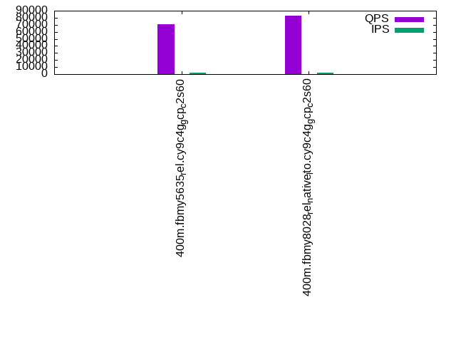
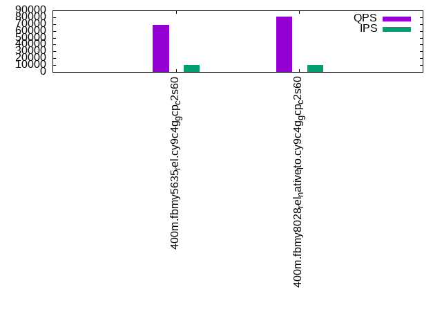
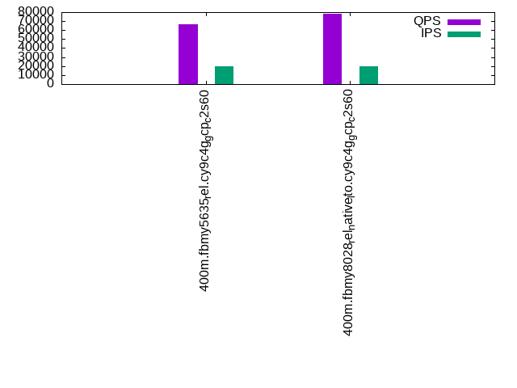

This is a report for the insert benchmark with 400M docs and 20 client(s). It is generated by scripts (bash, awk, sed) and Tufte might not be impressed. An overview of the insert benchmark is here and a short update is here. Below, by DBMS, I mean DBMS+version.config. An example is my8020.c10b40 where my means MySQL, 8020 is version 8.0.20 and c10b40 is the name for the configuration file.
The test server is c2-standard-60 from GCP with 30 cores, hyperthreading disabled, 240G RAM and 3T of NVMe storage. The benchmark was run with 20 clients and there were 1 or 2 connections per client (1 for queries, 1 for inserts). The benchmark loads 400M rows without secondary indexes, creates secondary indexes, loads another 400M rows then does 3 read+write tests for 1800 seconds each that do queries as fast as possible with 100, 500 and then 1000 writes/second/client concurrent with the queries. All clients share one table. The database is cached by the OS page cache but not the storage engine. Clients and the DBMS share one server. The per-database configs are in the per-database subdirectories here.
The tested DBMS are:
The numbers are inserts/s for l.i0 and l.i1, indexed docs (or rows) /s for l.x and queries/s for q*.2. The values are the average rate over the entire test for inserts (IPS) and queries (QPS). The range of values for IPS and QPS is split into 3 parts: bottom 25%, middle 50%, top 25%. Values in the bottom 25% have a red background, values in the top 25% have a green background and values in the middle have no color. A gray background is used for values that can be ignored because the DBMS did not sustain the target insert rate. Red backgrounds are not used when the minimum value is within 80% of the max value.
| dbms | l.i0 | l.x | l.i1 | q100.1 | q500.1 | q1000.1 |
|---|---|---|---|---|---|---|
| 400m.fbmy5635_rel.cy9c4g_gcp_c2s60 | 727273 | 101010 | 151286 | 70778 | 69230 | 66332 |
| 400m.fbmy8028_rel_native_lto.cy9c4g_gcp_c2s60 | 728597 | 107786 | 159808 | 82778 | 80883 | 77800 |
This table has relative throughput, throughput for the DBMS relative to the DBMS in the first line, using the absolute throughput from the previous table.
| dbms | l.i0 | l.x | l.i1 | q100.1 | q500.1 | q1000.1 |
|---|---|---|---|---|---|---|
| 400m.fbmy5635_rel.cy9c4g_gcp_c2s60 | 1.00 | 1.00 | 1.00 | 1.00 | 1.00 | 1.00 |
| 400m.fbmy8028_rel_native_lto.cy9c4g_gcp_c2s60 | 1.00 | 1.07 | 1.06 | 1.17 | 1.17 | 1.17 |
This lists the average rate of inserts/s for the tests that do inserts concurrent with queries. For such tests the query rate is listed in the table above. The read+write tests are setup so that the insert rate should match the target rate every second. Cells that are not at least 95% of the target have a red background to indicate a failure to satisfy the target.
| dbms | q100.1 | q500.1 | q1000.1 |
|---|---|---|---|
| fbmy5635_rel.cy9c4g_gcp_c2s60 | 1976 | 9890 | 19769 |
| fbmy8028_rel_native_lto.cy9c4g_gcp_c2s60 | 1976 | 9885 | 19769 |
| target | 2000 | 10000 | 20000 |
l.i0: load without secondary indexes. Graphs for performance per 1-second interval are here.
Average throughput:
Insert response time histogram: each cell has the percentage of responses that take <= the time in the header and max is the max response time in seconds. For the max column values in the top 25% of the range have a red background and in the bottom 25% of the range have a green background. The red background is not used when the min value is within 80% of the max value.
| dbms | 256us | 1ms | 4ms | 16ms | 64ms | 256ms | 1s | 4s | 16s | gt | max |
|---|---|---|---|---|---|---|---|---|---|---|---|
| fbmy5635_rel.cy9c4g_gcp_c2s60 | 1.502 | 98.361 | 0.100 | 0.002 | 0.035 | 0.001 | 0.264 | ||||
| fbmy8028_rel_native_lto.cy9c4g_gcp_c2s60 | 0.515 | 98.689 | 0.757 | 0.004 | 0.036 | 0.243 |
Performance metrics for the DBMS listed above. Some are normalized by throughput, others are not. Legend for results is here.
ips qps rps rmbps wps wmbps rpq rkbpq wpi wkbpi csps cpups cspq cpupq dbgb1 dbgb2 rss maxop p50 p99 tag 727273 0 0 0.0 550.8 152.5 0.000 0.000 0.001 0.215 136590 39.0 0.188 16 12.6 12.9 NA 0.264 37974 28879 400m.fbmy5635_rel.cy9c4g_gcp_c2s60 728597 0 0 0.0 460.1 110.8 0.000 0.000 0.001 0.156 135114 44.6 0.185 18 12.5 13.0 1.7 0.243 38158 29468 400m.fbmy8028_rel_native_lto.cy9c4g_gcp_c2s60
l.x: create secondary indexes.
Average throughput:
Performance metrics for the DBMS listed above. Some are normalized by throughput, others are not. Legend for results is here.
ips qps rps rmbps wps wmbps rpq rkbpq wpi wkbpi csps cpups cspq cpupq dbgb1 dbgb2 rss maxop p50 p99 tag 101010 0 0 0.0 47.8 13.5 0.000 0.000 0.000 0.137 592 2.9 0.006 9 25.3 25.7 NA 0.001 NA NA 400m.fbmy5635_rel.cy9c4g_gcp_c2s60 107786 0 0 0.0 38.4 11.5 0.000 0.000 0.000 0.109 792 2.9 0.007 8 25.3 25.8 6.0 0.002 NA NA 400m.fbmy8028_rel_native_lto.cy9c4g_gcp_c2s60
l.i1: continue load after secondary indexes created. Graphs for performance per 1-second interval are here.
Average throughput:
Insert response time histogram: each cell has the percentage of responses that take <= the time in the header and max is the max response time in seconds. For the max column values in the top 25% of the range have a red background and in the bottom 25% of the range have a green background. The red background is not used when the min value is within 80% of the max value.
| dbms | 256us | 1ms | 4ms | 16ms | 64ms | 256ms | 1s | 4s | 16s | gt | max |
|---|---|---|---|---|---|---|---|---|---|---|---|
| fbmy5635_rel.cy9c4g_gcp_c2s60 | 0.060 | 7.484 | 92.420 | 0.031 | 0.005 | 0.208 | |||||
| fbmy8028_rel_native_lto.cy9c4g_gcp_c2s60 | 0.043 | 5.387 | 94.514 | 0.036 | 0.018 | 0.001 | 0.349 |
Performance metrics for the DBMS listed above. Some are normalized by throughput, others are not. Legend for results is here.
ips qps rps rmbps wps wmbps rpq rkbpq wpi wkbpi csps cpups cspq cpupq dbgb1 dbgb2 rss maxop p50 p99 tag 151286 0 15 2.4 622.6 186.5 0.000 0.017 0.004 1.262 139305 29.4 0.921 58 54.5 55.5 NA 0.208 7591 6945 400m.fbmy5635_rel.cy9c4g_gcp_c2s60 159808 0 12 2.5 512.3 119.3 0.000 0.016 0.003 0.765 150452 33.2 0.941 62 53.6 54.8 5.1 0.349 7991 6443 400m.fbmy8028_rel_native_lto.cy9c4g_gcp_c2s60
q100.1: range queries with 100 insert/s per client. Graphs for performance per 1-second interval are here.
Average throughput:
Query response time histogram: each cell has the percentage of responses that take <= the time in the header and max is the max response time in seconds. For max values in the top 25% of the range have a red background and in the bottom 25% of the range have a green background. The red background is not used when the min value is within 80% of the max value.
| dbms | 256us | 1ms | 4ms | 16ms | 64ms | 256ms | 1s | 4s | 16s | gt | max |
|---|---|---|---|---|---|---|---|---|---|---|---|
| fbmy5635_rel.cy9c4g_gcp_c2s60 | 30.707 | 69.289 | 0.003 | nonzero | nonzero | 0.051 | |||||
| fbmy8028_rel_native_lto.cy9c4g_gcp_c2s60 | 81.609 | 18.388 | 0.003 | nonzero | 0.016 |
Insert response time histogram: each cell has the percentage of responses that take <= the time in the header and max is the max response time in seconds. For max values in the top 25% of the range have a red background and in the bottom 25% of the range have a green background. The red background is not used when the min value is within 80% of the max value.
| dbms | 256us | 1ms | 4ms | 16ms | 64ms | 256ms | 1s | 4s | 16s | gt | max |
|---|---|---|---|---|---|---|---|---|---|---|---|
| fbmy5635_rel.cy9c4g_gcp_c2s60 | 0.026 | 99.254 | 0.719 | 0.010 | |||||||
| fbmy8028_rel_native_lto.cy9c4g_gcp_c2s60 | 0.019 | 99.597 | 0.382 | 0.001 | 0.017 |
Performance metrics for the DBMS listed above. Some are normalized by throughput, others are not. Legend for results is here.
ips qps rps rmbps wps wmbps rpq rkbpq wpi wkbpi csps cpups cspq cpupq dbgb1 dbgb2 rss maxop p50 p99 tag 1976 70778 0 0.0 18.5 5.0 0.000 0.000 0.009 2.580 292942 64.9 4.139 275 52.4 53.9 NA 0.051 3580 3276 400m.fbmy5635_rel.cy9c4g_gcp_c2s60 1976 82778 0 0.0 23.7 3.7 0.000 0.000 0.012 1.940 323952 66.0 3.913 239 52.3 54.0 5.3 0.016 4171 3804 400m.fbmy8028_rel_native_lto.cy9c4g_gcp_c2s60
q500.1: range queries with 500 insert/s per client. Graphs for performance per 1-second interval are here.
Average throughput:
Query response time histogram: each cell has the percentage of responses that take <= the time in the header and max is the max response time in seconds. For max values in the top 25% of the range have a red background and in the bottom 25% of the range have a green background. The red background is not used when the min value is within 80% of the max value.
| dbms | 256us | 1ms | 4ms | 16ms | 64ms | 256ms | 1s | 4s | 16s | gt | max |
|---|---|---|---|---|---|---|---|---|---|---|---|
| fbmy5635_rel.cy9c4g_gcp_c2s60 | 24.487 | 75.484 | 0.028 | 0.001 | nonzero | 0.042 | |||||
| fbmy8028_rel_native_lto.cy9c4g_gcp_c2s60 | 75.953 | 24.024 | 0.022 | 0.001 | nonzero | 0.049 |
Insert response time histogram: each cell has the percentage of responses that take <= the time in the header and max is the max response time in seconds. For max values in the top 25% of the range have a red background and in the bottom 25% of the range have a green background. The red background is not used when the min value is within 80% of the max value.
| dbms | 256us | 1ms | 4ms | 16ms | 64ms | 256ms | 1s | 4s | 16s | gt | max |
|---|---|---|---|---|---|---|---|---|---|---|---|
| fbmy5635_rel.cy9c4g_gcp_c2s60 | 0.001 | 10.253 | 88.440 | 1.306 | 0.035 | ||||||
| fbmy8028_rel_native_lto.cy9c4g_gcp_c2s60 | nonzero | 16.435 | 83.221 | 0.344 | 0.031 |
Performance metrics for the DBMS listed above. Some are normalized by throughput, others are not. Legend for results is here.
ips qps rps rmbps wps wmbps rpq rkbpq wpi wkbpi csps cpups cspq cpupq dbgb1 dbgb2 rss maxop p50 p99 tag 9890 69230 0 0.0 51.4 14.8 0.000 0.000 0.005 1.534 279025 66.2 4.030 287 53.6 55.4 NA 0.042 3486 3196 400m.fbmy5635_rel.cy9c4g_gcp_c2s60 9885 80883 0 0.0 47.8 8.5 0.000 0.000 0.005 0.885 315965 67.1 3.906 249 53.5 55.4 5.3 0.049 4123 3756 400m.fbmy8028_rel_native_lto.cy9c4g_gcp_c2s60
q1000.1: range queries with 1000 insert/s per client. Graphs for performance per 1-second interval are here.
Average throughput:
Query response time histogram: each cell has the percentage of responses that take <= the time in the header and max is the max response time in seconds. For max values in the top 25% of the range have a red background and in the bottom 25% of the range have a green background. The red background is not used when the min value is within 80% of the max value.
| dbms | 256us | 1ms | 4ms | 16ms | 64ms | 256ms | 1s | 4s | 16s | gt | max |
|---|---|---|---|---|---|---|---|---|---|---|---|
| fbmy5635_rel.cy9c4g_gcp_c2s60 | 14.603 | 85.345 | 0.050 | 0.001 | nonzero | 0.050 | |||||
| fbmy8028_rel_native_lto.cy9c4g_gcp_c2s60 | 66.275 | 33.685 | 0.039 | 0.001 | nonzero | 0.034 |
Insert response time histogram: each cell has the percentage of responses that take <= the time in the header and max is the max response time in seconds. For max values in the top 25% of the range have a red background and in the bottom 25% of the range have a green background. The red background is not used when the min value is within 80% of the max value.
| dbms | 256us | 1ms | 4ms | 16ms | 64ms | 256ms | 1s | 4s | 16s | gt | max |
|---|---|---|---|---|---|---|---|---|---|---|---|
| fbmy5635_rel.cy9c4g_gcp_c2s60 | 0.003 | 15.153 | 83.734 | 1.110 | 0.037 | ||||||
| fbmy8028_rel_native_lto.cy9c4g_gcp_c2s60 | 0.003 | 25.428 | 74.119 | 0.450 | 0.034 |
Performance metrics for the DBMS listed above. Some are normalized by throughput, others are not. Legend for results is here.
ips qps rps rmbps wps wmbps rpq rkbpq wpi wkbpi csps cpups cspq cpupq dbgb1 dbgb2 rss maxop p50 p99 tag 19769 66332 0 0.0 105.1 31.4 0.000 0.000 0.005 1.625 261855 68.2 3.948 308 55.9 56.2 NA 0.050 3340 3085 400m.fbmy5635_rel.cy9c4g_gcp_c2s60 19769 77800 0 0.0 88.2 17.9 0.000 0.000 0.004 0.927 299809 68.8 3.854 265 56.2 56.7 5.4 0.034 3933 3596 400m.fbmy8028_rel_native_lto.cy9c4g_gcp_c2s60
l.i0: load without secondary indexes
Performance metrics for all DBMS, not just the ones listed above. Some are normalized by throughput, others are not. Legend for results is here.
ips qps rps rmbps wps wmbps rpq rkbpq wpi wkbpi csps cpups cspq cpupq dbgb1 dbgb2 rss maxop p50 p99 tag 727273 0 0 0.0 550.8 152.5 0.000 0.000 0.001 0.215 136590 39.0 0.188 16 12.6 12.9 NA 0.264 37974 28879 400m.fbmy5635_rel.cy9c4g_gcp_c2s60 728597 0 0 0.0 460.1 110.8 0.000 0.000 0.001 0.156 135114 44.6 0.185 18 12.5 13.0 1.7 0.243 38158 29468 400m.fbmy8028_rel_native_lto.cy9c4g_gcp_c2s60
l.x: create secondary indexes
Performance metrics for all DBMS, not just the ones listed above. Some are normalized by throughput, others are not. Legend for results is here.
ips qps rps rmbps wps wmbps rpq rkbpq wpi wkbpi csps cpups cspq cpupq dbgb1 dbgb2 rss maxop p50 p99 tag 101010 0 0 0.0 47.8 13.5 0.000 0.000 0.000 0.137 592 2.9 0.006 9 25.3 25.7 NA 0.001 NA NA 400m.fbmy5635_rel.cy9c4g_gcp_c2s60 107786 0 0 0.0 38.4 11.5 0.000 0.000 0.000 0.109 792 2.9 0.007 8 25.3 25.8 6.0 0.002 NA NA 400m.fbmy8028_rel_native_lto.cy9c4g_gcp_c2s60
l.i1: continue load after secondary indexes created
Performance metrics for all DBMS, not just the ones listed above. Some are normalized by throughput, others are not. Legend for results is here.
ips qps rps rmbps wps wmbps rpq rkbpq wpi wkbpi csps cpups cspq cpupq dbgb1 dbgb2 rss maxop p50 p99 tag 151286 0 15 2.4 622.6 186.5 0.000 0.017 0.004 1.262 139305 29.4 0.921 58 54.5 55.5 NA 0.208 7591 6945 400m.fbmy5635_rel.cy9c4g_gcp_c2s60 159808 0 12 2.5 512.3 119.3 0.000 0.016 0.003 0.765 150452 33.2 0.941 62 53.6 54.8 5.1 0.349 7991 6443 400m.fbmy8028_rel_native_lto.cy9c4g_gcp_c2s60
q100.1: range queries with 100 insert/s per client
Performance metrics for all DBMS, not just the ones listed above. Some are normalized by throughput, others are not. Legend for results is here.
ips qps rps rmbps wps wmbps rpq rkbpq wpi wkbpi csps cpups cspq cpupq dbgb1 dbgb2 rss maxop p50 p99 tag 1976 70778 0 0.0 18.5 5.0 0.000 0.000 0.009 2.580 292942 64.9 4.139 275 52.4 53.9 NA 0.051 3580 3276 400m.fbmy5635_rel.cy9c4g_gcp_c2s60 1976 82778 0 0.0 23.7 3.7 0.000 0.000 0.012 1.940 323952 66.0 3.913 239 52.3 54.0 5.3 0.016 4171 3804 400m.fbmy8028_rel_native_lto.cy9c4g_gcp_c2s60
q500.1: range queries with 500 insert/s per client
Performance metrics for all DBMS, not just the ones listed above. Some are normalized by throughput, others are not. Legend for results is here.
ips qps rps rmbps wps wmbps rpq rkbpq wpi wkbpi csps cpups cspq cpupq dbgb1 dbgb2 rss maxop p50 p99 tag 9890 69230 0 0.0 51.4 14.8 0.000 0.000 0.005 1.534 279025 66.2 4.030 287 53.6 55.4 NA 0.042 3486 3196 400m.fbmy5635_rel.cy9c4g_gcp_c2s60 9885 80883 0 0.0 47.8 8.5 0.000 0.000 0.005 0.885 315965 67.1 3.906 249 53.5 55.4 5.3 0.049 4123 3756 400m.fbmy8028_rel_native_lto.cy9c4g_gcp_c2s60
q1000.1: range queries with 1000 insert/s per client
Performance metrics for all DBMS, not just the ones listed above. Some are normalized by throughput, others are not. Legend for results is here.
ips qps rps rmbps wps wmbps rpq rkbpq wpi wkbpi csps cpups cspq cpupq dbgb1 dbgb2 rss maxop p50 p99 tag 19769 66332 0 0.0 105.1 31.4 0.000 0.000 0.005 1.625 261855 68.2 3.948 308 55.9 56.2 NA 0.050 3340 3085 400m.fbmy5635_rel.cy9c4g_gcp_c2s60 19769 77800 0 0.0 88.2 17.9 0.000 0.000 0.004 0.927 299809 68.8 3.854 265 56.2 56.7 5.4 0.034 3933 3596 400m.fbmy8028_rel_native_lto.cy9c4g_gcp_c2s60
Insert response time histogram
256us 1ms 4ms 16ms 64ms 256ms 1s 4s 16s gt max tag 0.000 1.502 98.361 0.100 0.002 0.035 0.001 0.000 0.000 0.000 0.264 fbmy5635_rel.cy9c4g_gcp_c2s60 0.000 0.515 98.689 0.757 0.004 0.036 0.000 0.000 0.000 0.000 0.243 fbmy8028_rel_native_lto.cy9c4g_gcp_c2s60
TODO - determine whether there is data for create index response time
Insert response time histogram
256us 1ms 4ms 16ms 64ms 256ms 1s 4s 16s gt max tag 0.000 0.060 7.484 92.420 0.031 0.005 0.000 0.000 0.000 0.000 0.208 fbmy5635_rel.cy9c4g_gcp_c2s60 0.000 0.043 5.387 94.514 0.036 0.018 0.001 0.000 0.000 0.000 0.349 fbmy8028_rel_native_lto.cy9c4g_gcp_c2s60
Query response time histogram
256us 1ms 4ms 16ms 64ms 256ms 1s 4s 16s gt max tag 30.707 69.289 0.003 nonzero nonzero 0.000 0.000 0.000 0.000 0.000 0.051 fbmy5635_rel.cy9c4g_gcp_c2s60 81.609 18.388 0.003 nonzero 0.000 0.000 0.000 0.000 0.000 0.000 0.016 fbmy8028_rel_native_lto.cy9c4g_gcp_c2s60
Insert response time histogram
256us 1ms 4ms 16ms 64ms 256ms 1s 4s 16s gt max tag 0.000 0.026 99.254 0.719 0.000 0.000 0.000 0.000 0.000 0.000 0.010 fbmy5635_rel.cy9c4g_gcp_c2s60 0.000 0.019 99.597 0.382 0.001 0.000 0.000 0.000 0.000 0.000 0.017 fbmy8028_rel_native_lto.cy9c4g_gcp_c2s60
Query response time histogram
256us 1ms 4ms 16ms 64ms 256ms 1s 4s 16s gt max tag 24.487 75.484 0.028 0.001 nonzero 0.000 0.000 0.000 0.000 0.000 0.042 fbmy5635_rel.cy9c4g_gcp_c2s60 75.953 24.024 0.022 0.001 nonzero 0.000 0.000 0.000 0.000 0.000 0.049 fbmy8028_rel_native_lto.cy9c4g_gcp_c2s60
Insert response time histogram
256us 1ms 4ms 16ms 64ms 256ms 1s 4s 16s gt max tag 0.000 0.001 10.253 88.440 1.306 0.000 0.000 0.000 0.000 0.000 0.035 fbmy5635_rel.cy9c4g_gcp_c2s60 0.000 nonzero 16.435 83.221 0.344 0.000 0.000 0.000 0.000 0.000 0.031 fbmy8028_rel_native_lto.cy9c4g_gcp_c2s60
Query response time histogram
256us 1ms 4ms 16ms 64ms 256ms 1s 4s 16s gt max tag 14.603 85.345 0.050 0.001 nonzero 0.000 0.000 0.000 0.000 0.000 0.050 fbmy5635_rel.cy9c4g_gcp_c2s60 66.275 33.685 0.039 0.001 nonzero 0.000 0.000 0.000 0.000 0.000 0.034 fbmy8028_rel_native_lto.cy9c4g_gcp_c2s60
Insert response time histogram
256us 1ms 4ms 16ms 64ms 256ms 1s 4s 16s gt max tag 0.000 0.003 15.153 83.734 1.110 0.000 0.000 0.000 0.000 0.000 0.037 fbmy5635_rel.cy9c4g_gcp_c2s60 0.000 0.003 25.428 74.119 0.450 0.000 0.000 0.000 0.000 0.000 0.034 fbmy8028_rel_native_lto.cy9c4g_gcp_c2s60